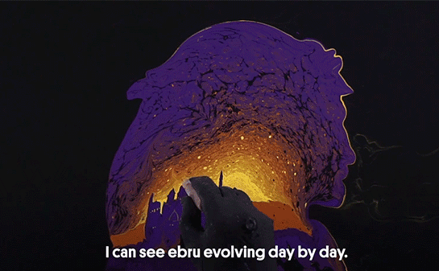

Ebru artist of the modern world
The unique style of marbling artist Garip Ay combines traditional marbling art with modern painting. The artist creates unique works by transferring many paintings, especially portraits, to paper with the marbling technique.
Read more

Explore the Traditional Art of Ebru
“When people watch ebru, they think it is relaxing and soothing, but it my personal experience, it is really stressful. While doing ebru, you have control problems because you’re doing something on water,” he says.
Some projects by AyMeet the art of Ay
Please write to us if you want to know more about the venues where Garip Ay will be performing or for information about her exhibitions.
Get in touch